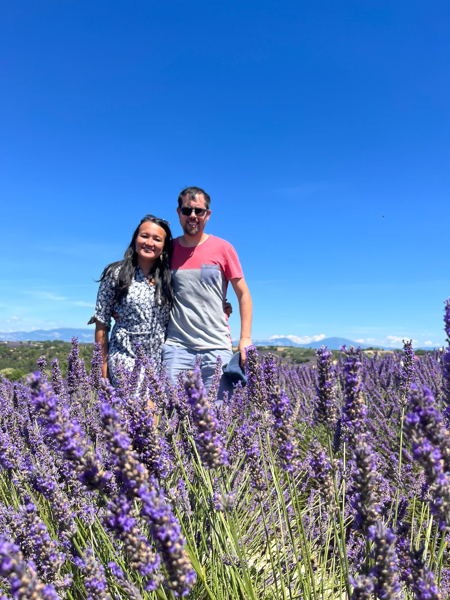
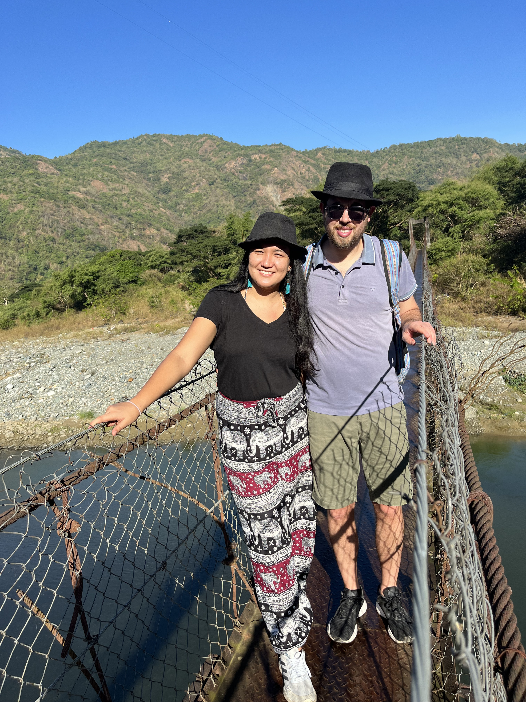
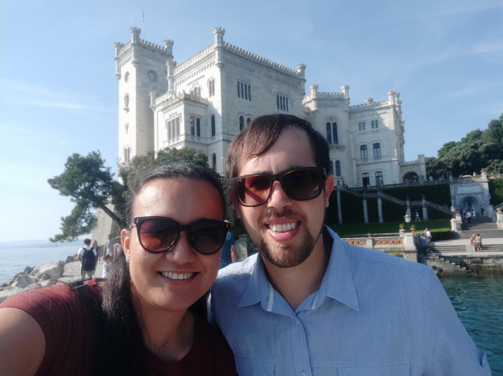
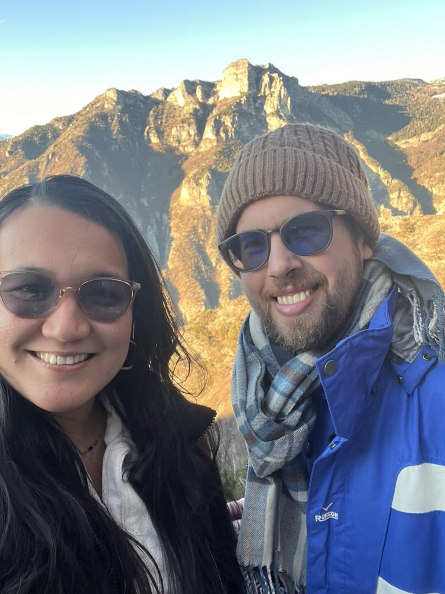
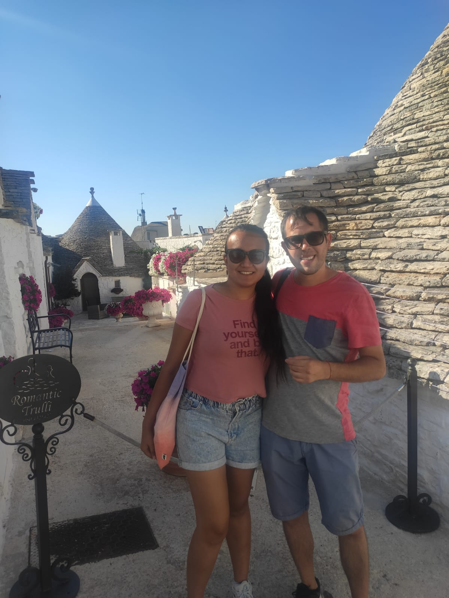
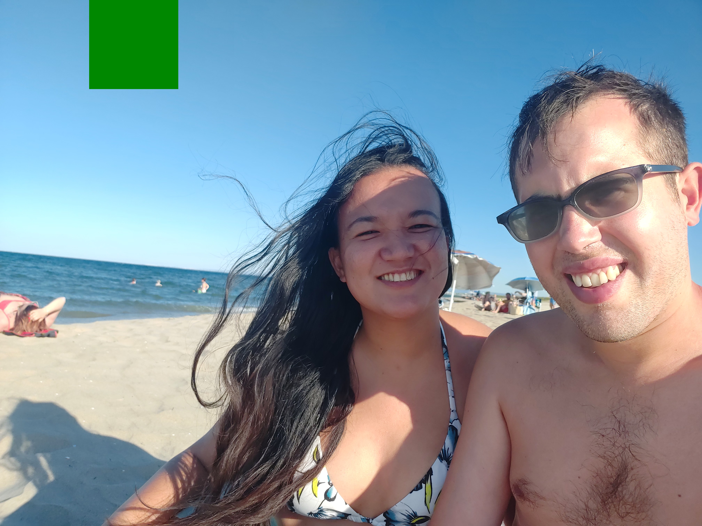
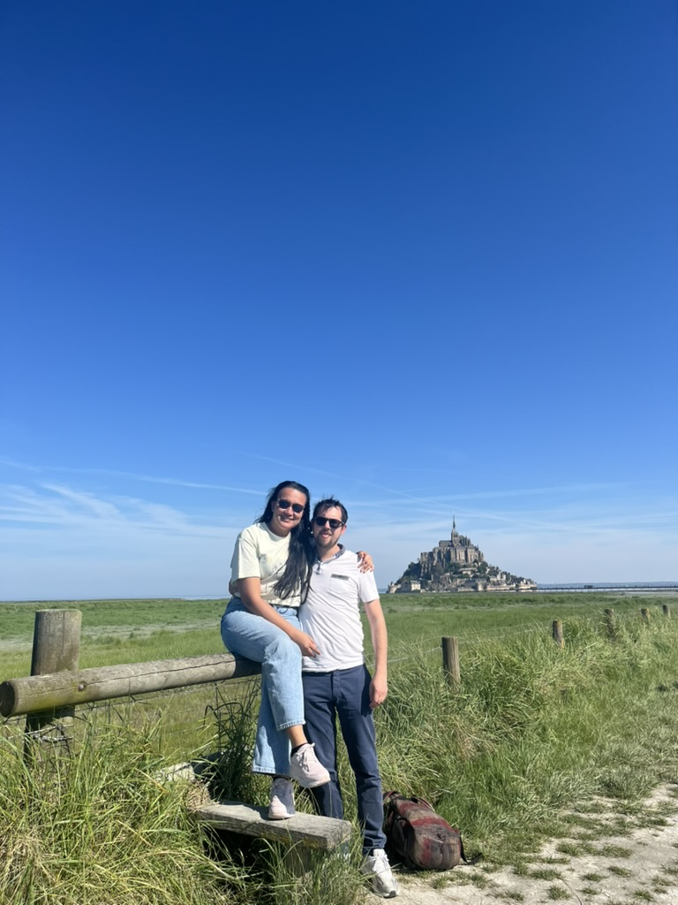
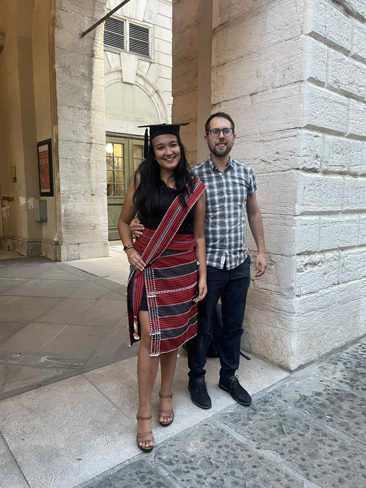
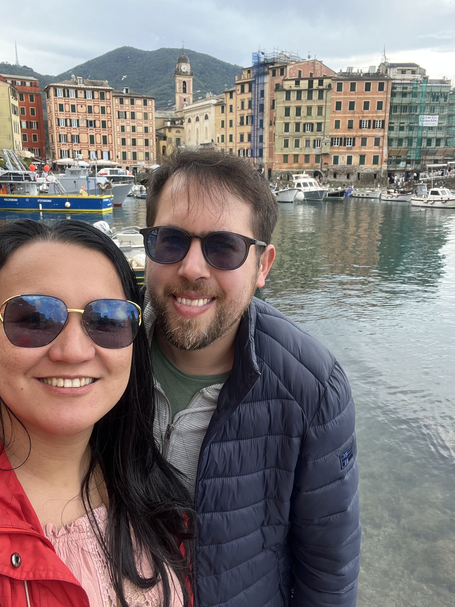

How it began · Come è iniziato
Our Story La Nostra Storia


"What began on a sunny afternoon in Trieste turned into weekends across three cities — and, eventually, a lifetime."
"Quello che è iniziato in un pomeriggio di sole a Trieste si è trasformato in weekend tra tre città — e, alla fine, in una vita insieme."
We met in Trieste on September 11, 2021 — a beautiful, sunny day neither of us has forgotten. Kyrell had just finished her pre-PhD diploma and was about to begin her PhD there, while Francesco was completing his specialization in Padova and working at Guardia Medica in Vicenza.
From that first meeting, we found ourselves crossing between Trieste, Padova, and Vicenza every weekend just to see each other — and soon after, we started choosing new places to explore together, always drawn to lakes, mountains, beaches, and Christmas markets. On January 1, 2022, we made it official.
Between his work and her studies, the weekdays have always kept us busy — bridged by a call or message every day — but the weekends and long holidays have always been ours, and they still are.
In 2025, we both finished what we'd set out to do — his specialization, her PhD — and started a new adventure together: moving to Genova, the city we, for now, call home.
And on September 15, 2026, in Vicenza, we begin writing the next chapter — together, always.
Ci siamo conosciuti a Trieste l'11 settembre 2021 — una bellissima giornata di sole che nessuno dei due ha dimenticato. Kyrell aveva appena concluso il suo diploma pre-dottorato e stava per iniziare il dottorato proprio lì, mentre Francesco stava completando la sua specializzazione a Padova e lavorando in Guardia Medica a Vicenza.
Da quel primo incontro, ci siamo ritrovati a viaggiare tra Trieste, Padova e Vicenza ogni fine settimana solo per vederci — e poco dopo abbiamo iniziato a scegliere insieme nuovi posti da esplorare, sempre attratti da laghi, montagne, spiagge e mercatini di Natale. Il 1° gennaio 2022 abbiamo reso tutto ufficiale.
Tra il suo lavoro e i suoi studi, i giorni feriali ci hanno sempre tenuti impegnati — uniti da una chiamata o un messaggio ogni giorno — ma i weekend e le lunghe vacanze sono sempre stati nostri, e lo sono ancora.
Nel 2025 abbiamo entrambi concluso ciò che avevamo iniziato — la sua specializzazione, il suo dottorato — e abbiamo iniziato una nuova avventura insieme: trasferendoci a Genova, la città che, per ora, chiamiamo casa.
E il 15 settembre 2026, a Vicenza, inizieremo a scrivere il prossimo capitolo — insieme, per sempre.
We are sharing photos of us in some of our favorite places through the years.
Condividiamo alcune foto di noi in alcuni dei nostri posti preferiti negli anni.

Trieste, Italia — la nostra prima foto insieme

Folgaria — aria di montagna e momenti di quiete

Alberobello — persi tra i trulli

Colmar, Francia — mercatini di Natale e ciottoli

Mont Saint-Michel — un castello uscito da un sogno

Filippine — alla scoperta della città natale di Kye

Parco Güell, Barcellona — la magia di Gaudí

Liguria — villaggi pastello sul mare